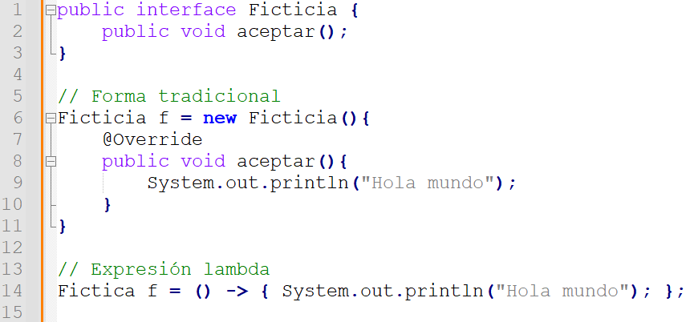
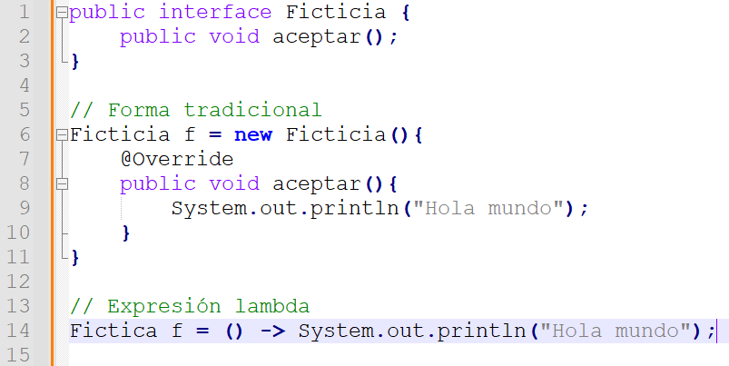
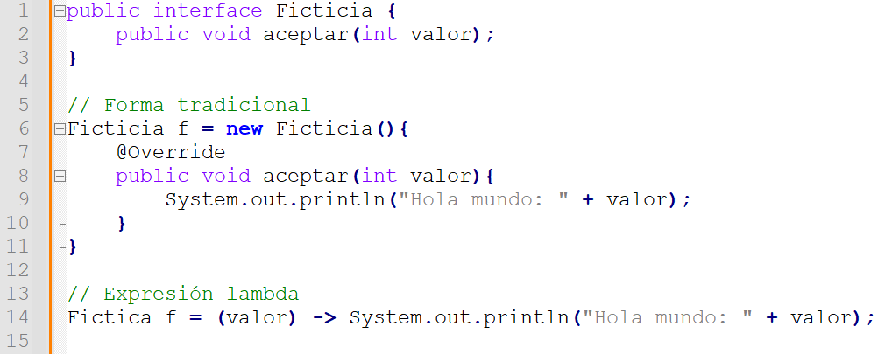
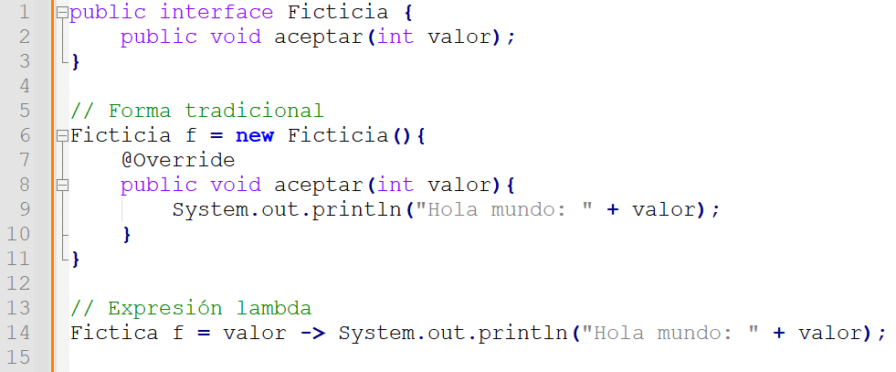

La programación funcional es un paradigma de programación basado en el uso de funciones matemáticas. Los lenguajes de programación funcional son aquellos lenguajes donde las variables no tienen estado y son inmutables, no pueden cambiar su valor a lo largo de la ejecución
Los programas se estructuran componiendo expresiones que se evalúan como funciones. Java es un lenguaje híbrido, que combina las características de los lenguajes imperativos, que es lo que conocíamos hasta esta versión, con las nuevas características de la programación funcional
En la programación funcional no hay tipo de datos. En Java, gracias a las expresiones lambda vamos a poder hacer uso de la inferencia de tipos, es decir, dentro de la expresión lambda vamos a poder prescindir de declarar los tipos de datos.
Para lograr la programación funcional Java incorpora las expresiones lambda, las interfaces funcionales y los métodos referenciados.
Una expresión lambda es esencialmente una función sin nombre, que tiene un cuerpo de función y puede o no recibir parámetros.
En Java, una expresión lambda siempre va a representar el método abstracto de una interfaz funcional.
La expresión lambda va a separar su lista de parámetros de su cuerpo de función por medio del operador flecha ->
Ejemplo: (argumentos) -> { //cuerpo de la expresión lambda }
Primero, comentar otras características de las interfaces en Java 8.
Las interfaces funcionales se utilizan principalmente para permitir el paso de funciones a métodos. Esto es, que podemos pasar una implementación de una función como argumento de un método.
Para que una interfaz sea funcional debe cumplir con un solo requisito: Solo debe tener un método abstracto. Puede tener varios métodos estáticos y default si quiere, pero solo un método abstracto.
De manera general, la sintaxis de una expresión lambda es: parametros -> cuerpo
Una expresión lamba representa el método abstracto de una interfaz funcional
Después de las llaves, se debe añadir un punto y coma, como si la expresión fuera una sentencia
Si la expresión lambda solamente tiene una sentencia, se puede prescindir de las llaves
Si el método recibe parámetros, no es necesario especificar el tipo
También, si sólo recibe un parámetro no es necesario usar los paréntisis
Si el método abstracto devuelve un valor, no es necesario usar la palabra clave return en la expresión lambda
Clases LambdaSinParametrosTest y FuncionSinParametrosTest subidas en la carpeta de ejercicios
Clases Operaciones y LambdaCoParametrosTest subidas en la carpeta de ejercicios
Clases Calculadora y LambdaCoDevolucionTest subidas en la carpeta de ejercicios
No siempre es posible inferir el tipo de los parámetros y de la función a usar. En las clases CalculadoraInt, CalculadoraLong y LambdaConProblemaDeTiposTest se puden ver alternativas a este problema